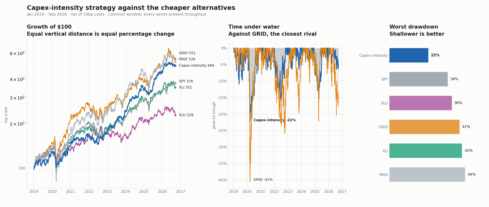
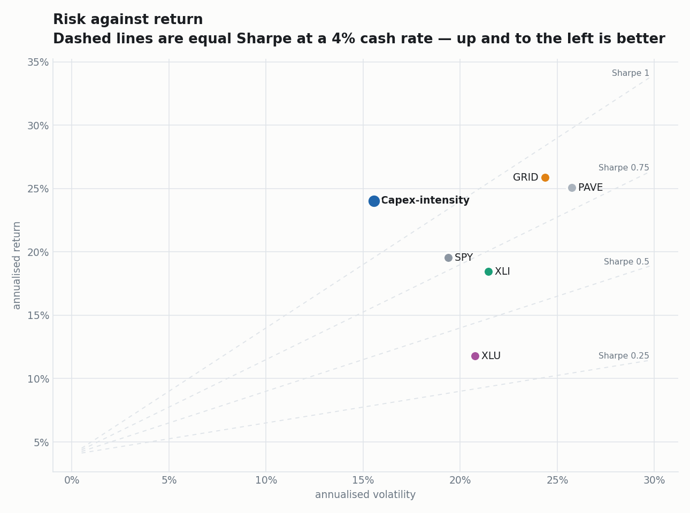

Date: 2026-09-22
Status: shipped — electrification_strategy/, 66 tests
Companion: docs/capex-intensity-proposal.md (the mechanical alternative)
Evidence: docs/electrification-strategy-v1-results.md, docs/RESEARCH-LOG.md §1
Own roughly 27 companies that sell equipment and construction services into the electricity buildout, equal-weighted with a gold-and-bonds cushion, and short two data-centre landlords when real interest rates are rising.
Buy the suppliers to the grid buildout. Don't buy the grid itself.
The distinction is the whole thesis. Utilities own the assets and earn a regulated return on them; the companies that sell them switchgear, transformers, cabling and construction labour capture the same capital cycle without the rate base, the regulator, or the balance sheet.
| step | definition |
|---|---|
| Universe | a 33-name seed list of electrification suppliers, tagged by sub-industry |
| Screen | customer_institutional AND (earnings_valued OR low_policy_dependence) |
| Weighting | equal weight, 25% single-name cap, quarterly reconstitution with a 42-day reporting lag, 252-day listing gate |
| Overlays | 20% volatility target · graduated valuation de-lever · 15% GLD/IEF sleeve |
| Short | DLR + EQIX at fixed small notional, gated on rising 10-year real yields |
customer_institutional means the firm sells B2B to utilities, hyperscalers,
government or large industrial customers — not to households. That one criterion does
almost all the work (see §6).
Production path (backtest.run_comparison), RF = 4%. Common window with the
alternatives, Jan 2019 – Sep 2026:
| CAGR | Vol | Sharpe | MaxDD | Calmar | fee | |
|---|---|---|---|---|---|---|
Screened Electrification +short |
24.0% | 15.5% | 1.21 | −22.4% | 1.07 | — |
| GRID — smart-grid ETF | 25.9% | 24.4% | 0.90 | −40.6% | 0.64 | 0.57% |
| PAVE — US infrastructure ETF | 25.1% | 25.8% | 0.84 | −43.8% | 0.57 | 0.47% |
| SPY — S&P 500 | 19.5% | 19.4% | 0.81 | −33.7% | 0.58 | 0.09% |
| XLI — industrials sector | 18.4% | 21.5% | 0.71 | −42.0% | 0.44 | 0.08% |
| XLU — utilities sector | 11.8% | 20.8% | 0.45 | −36.1% | 0.33 | 0.08% |
It wins on every risk measure simultaneously — highest Sharpe, lowest volatility, shallowest drawdown, best Calmar — while giving up about 2pp of raw CAGR to GRID and PAVE. That is the trade: slightly less return for materially less pain.
By sub-window:
| window | +val+sleeve Sh / Cal |
+val+sleeve+short Sh / Cal / MaxDD |
|---|---|---|
| 2023-2026 | 1.56 / 1.82 | 1.54 / 2.31 / −12.3% |
| 2025-2026 | 1.30 / 1.57 | 1.46 / 2.32 / −11.9% |
| full 2017-06 → 2026 | 0.69 / 0.60 | 0.65 / 0.57 |
Note the full-sample figure honestly: 2017-2018 was poor, and the strong numbers are concentrated in the post-2022 buildout. This is a thematic book, and the theme has a date.


Both books and every alternative on one basis — production compute_metrics, RF = 4%,
same price data, same run. Bold marks the best value in each column.
| CAGR | Vol | Sharpe | MaxDD | Calmar | |
|---|---|---|---|---|---|
| Screened Electrification +short | 28.3% | 14.3% | 1.54 | -12.3% | 2.31 |
| Screened Electrification (no short) | 31.0% | 15.5% | 1.56 | -17.0% | 1.82 |
| Capex-intensity L/S 0.5x | 31.8% | 21.1% | 1.23 | -22.7% | 1.40 |
| GRID (smart-grid ETF, 0.57%) | 25.4% | 20.4% | 1.02 | -22.2% | 1.15 |
| PAVE (infrastructure ETF, 0.47%) | 26.1% | 20.4% | 1.04 | -27.9% | 0.94 |
| SPY (S&P 500, 0.09%) | 21.2% | 14.8% | 1.11 | -18.8% | 1.13 |
| XLI (industrials, 0.08%) | 20.1% | 16.4% | 0.95 | -20.2% | 0.99 |
| XLU (utilities, 0.08%) | 7.8% | 16.5% | 0.30 | -16.8% | 0.47 |
| CAGR | Vol | Sharpe | MaxDD | Calmar | |
|---|---|---|---|---|---|
| Screened Electrification +short | 27.6% | 14.7% | 1.46 | -11.9% | 2.32 |
| Screened Electrification (no short) | 26.7% | 16.2% | 1.30 | -17.0% | 1.57 |
| Capex-intensity L/S 0.5x | 29.5% | 21.6% | 1.12 | -22.6% | 1.30 |
| GRID (smart-grid ETF, 0.57%) | 24.8% | 23.6% | 0.89 | -21.1% | 1.17 |
| PAVE (infrastructure ETF, 0.47%) | 15.2% | 22.2% | 0.57 | -23.7% | 0.64 |
| SPY (S&P 500, 0.09%) | 17.4% | 16.9% | 0.80 | -18.8% | 0.93 |
| XLI (industrials, 0.08%) | 14.3% | 18.8% | 0.59 | -18.2% | 0.79 |
| XLU (utilities, 0.08%) | 6.5% | 16.2% | 0.22 | -12.6% | 0.51 |
Reading it. The shipped +short book takes Sharpe and Calmar in both windows, and it
does so at roughly two-thirds the volatility of the capex-intensity book and half
the drawdown. Capex-intensity delivers the highest raw CAGR in 2023-2026 (31.8%) and
2025-2026 (29.5%), but pays for it in vol (21%) and depth (−23%).
Against the cheap alternatives: both books beat GRID, PAVE, SPY, XLI and XLU on Sharpe and Calmar in both windows — so this is not a case where the ETF quietly wins. XLU, the naive "buy power" trade, is the worst thing on the page in both windows, which is the thesis stated as a negative control.
The DLR/EQIX short is small, and its job is not return — it is drawdown. Turning it on costs a little CAGR and buys a lot of shape: 2025-2026 max drawdown improves −17.0% → −11.9% and Calmar 1.57 → 2.32. Data-centre landlords are the rate-sensitive expression of the same theme, so shorting them when real yields rise hedges the book's single biggest macro exposure with names from its own universe.
Nine other short candidates were tested and rejected (docs/RESEARCH-LOG.md,
short-leg search, CLOSED). No thematic equity short improved the book; this one is
insurance, not alpha.
Enhanced thematic beta, not alpha. Roughly all the return is the electrification theme. The claim is not that it finds mispriced securities — it is that it expresses a theme with better risk shape than the ETFs that express the same theme, by excluding the ~43% of VOLT that is utilities, midstream and components, and by adding two overlays the ETFs do not have.
Correlation to SPY is high; this book does not diversify an equity portfolio.
An ablation on 2026-09-22 established where the back-cast exposure actually sits:
profitable_2026 was fully redundant and has been removed. The screen produced the
identical 28-name pool with and without it, and byte-identical returns.customer_institutional AND (earnings_valued OR
low_policy_dependence) changes nothing — zero adds, zero drops.customer_institutional alone is arguably better: 2025-2026 Sharpe 1.50,
Calmar 2.55, MaxDD −11.2%.So the quality tests are not the problem. The 33-name seed list is — 30 of 33 names pass the screen, which means the selection lives in who got onto the list in 2026, not in the filter applied to it. Everything else is point-in-time; this is not.
That is the one material difference from the capex-intensity book, whose universe is derived mechanically from SEC industry codes. Pre-live gate: a point-in-time seed list.